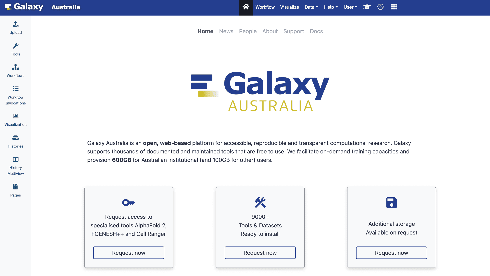
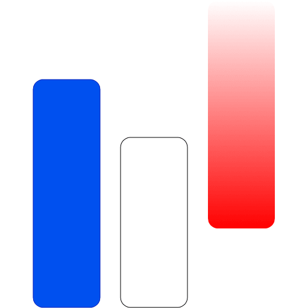
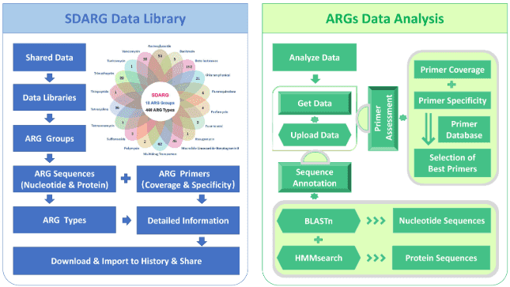
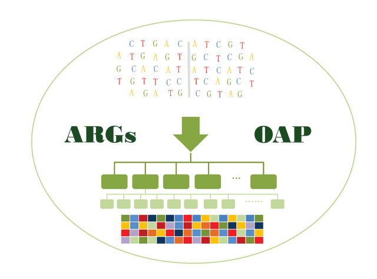
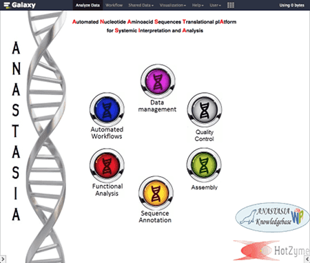
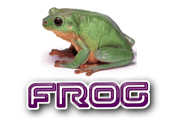
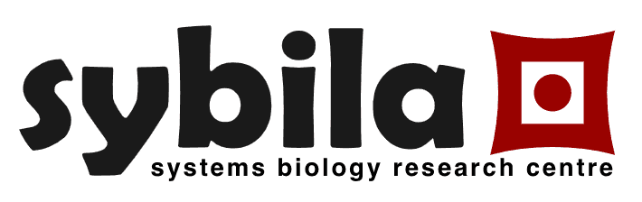

Use Galaxy
Galaxy is available in many forms. Find the right server for your research from 224+ options worldwide.
Main UseGalaxy Servers
The main public Galaxy servers are free for everyone. Start here for general-purpose genomic analysis.
-
UseGalaxy.org
The main US Galaxy server hosted at Penn State and Johns Hopkins. Free for everyone.
-
UseGalaxy.eu
The European Galaxy server at Freiburg with extensive tools and training support.
- AU
UseGalaxy.org.au
Galaxy Australia serving the Oceania region with local support.
- CA
UseGalaxy.ca
The Canadian Galaxy server for general purpose analysis.
All Galaxy Servers224 servers
Beyond the main UseGalaxy servers, there are hundreds of specialized Galaxy instances for specific domains, geographic regions, and research areas. Use the filters below to find the right one for your needs.
Showing 12 of 12 sample servers (224 in the full directory).
-
The Galaxy Project free public server; biomedical research
UseGalaxyUnited StatesPublic Serverusegalaxy.org
-
The free public European Galaxy server
UseGalaxyGermanyPublic Serverusegalaxy.eu
-

The Australian UseGalaxy server.
UseGalaxyAustraliaPublic Serverusegalaxy.org.au
-
Us
The Canadian Galaxy server for general purpose analysis
UseGalaxyCanadaPublic Serverusegalaxy.ca
-

General purpose genomics Galaxy server
UseGalaxyFrancePublic Serverusegalaxy.fr
-

Antibiotic Resistance Gene Analyzer
Domain specificChinaPublic Servermem.rcees.ac.cn
-

Fast annotation and classification of antibiotic resistance gene-like sequences from metagenomic data.
Domain specificHong KongPublic Serversmile.hku.hk
-
Analysis of genomic data in the field of public health and food safety, with the aim of deploying a comprehensive bioinformatics approach to the study of food-borne zoonoses and infectious diseases at the human and animal interface.
Domain specificItalyPublic Serverw3.iss.it
-
Set up you own general purpose genomics server running AWS using GVL and CloudMan.
General purposeCommercial Cloudaws.amazon.com
-

Automated Nucleotide Aminoacid Sequences Translational plAtform for Systemic Interpretation and Analysis
General purposeGreecePublic Servermotherbox.chemeng.ntua.gr
-

FROG stands for FingeRprinting Ontology of Genomic variations. FROG fingerprints have been devised to capture genomic variations at various levels.
Tool publishingIndiaPublic Serverab-openlab.csir.res.in
-

Systems biology tools implemented by the Sybila team.
Tool publishingCzechiaPublic Serversybila.fi.muni.cz
No Galaxy servers match these filters
This sample holds 12 of 224 servers. Clear the filters to see them all.
Other Ways to Use Galaxy
Can't find what you need? There are more options for running Galaxy.
Run Your Own
Install and configure Galaxy on your own infrastructure.
Cloud Deployments
Deploy Galaxy on AWS, GCP, Azure, or other cloud platforms.
Galaxy Training
Learn how to use Galaxy with our extensive tutorial library.